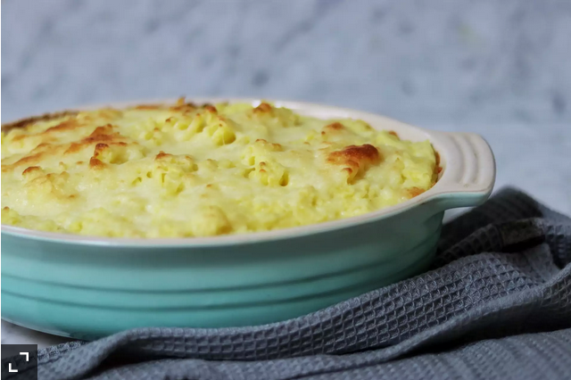

Shepherd Pie

Description
Shepherd's Pie recipes are traditionally done with lamb, but are great
with any ground meat--turkey and beef being the most popular modern versions.
Give this great casserole a try,
and watch everyone flock to the table
Ingredients
- 1¼ pounds Yukon Gold potatoes, peeled and cubed
- 3 cloves garlic, halved
- 1 pound lean ground beef
- 2 tablespoons flour
- ¾ cup beef broth
- 3 tablespoons ketchup
- 4 cups frozen mixed vegetable
- ½ teaspoon black pepper
- ½ cup shredded Cheddar cheese, divided
- ¾ cup light sour cream
- 1 teaspoon salt
Steps
- Place cubed potatoes and garlic in a large pot with enough water to cover.
Bring to a boil over high heat; reduce heat to medium-low, cover, and simmer until tender, about 20 minutes.
- Preheat the oven to 375 degrees F (190 degrees C).
- Brown ground beef over medium heat in a skillet.
Stir in flour, mixing with beef drippings.
- Add beef broth, ketchup and vegetables. Stir to combine.
Cook for 5 minutes, until thick.
- Transfer beef mixture into an oven-proof casserole dish.
- Drain potatoes and smash them a little bit before adding 1/4 cup of grated cheese and sour cream.
Mash together until smooth.
- Spoon potatoes onto the middle of the meat mixture.
With a fork, spread potatoes from the center to the edges to form the top layer.
- Sprinkle with remaining 1/4 cup of grated cheese.
- Bake in the preheated oven for 20-25 minutes, or until cheese is melted and golden.
Let cool 15 minutes before serving.